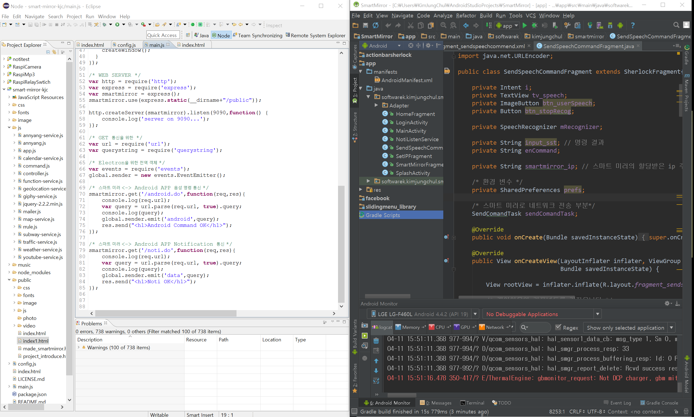

오늘 날씨
{{currentForcast.temperature}}°
{{forcast.day}}
{{forcast.temperatureMin}}°
{{forcast.temperatureMax}}°
{{greeting}}

[ 사용 가능한 명령 ]
IP : {{ipAddress}}
명령 메뉴
사용 가능한 명령을 보여줍니다.
홈으로/메인으로
홈 스크린으로 돌아갑니다.
안녕 미러
미러를 깨웁니다.
잘자 미러
미러를 재웁니다.
너는 누구니
미러는 누구일까요?
디버그
디버그 정보를 보여줍니다.
Clear
{{ result.date | date : 'EEE MMM, YYYY hh:mm:ss a' }}
{{ result.content }}